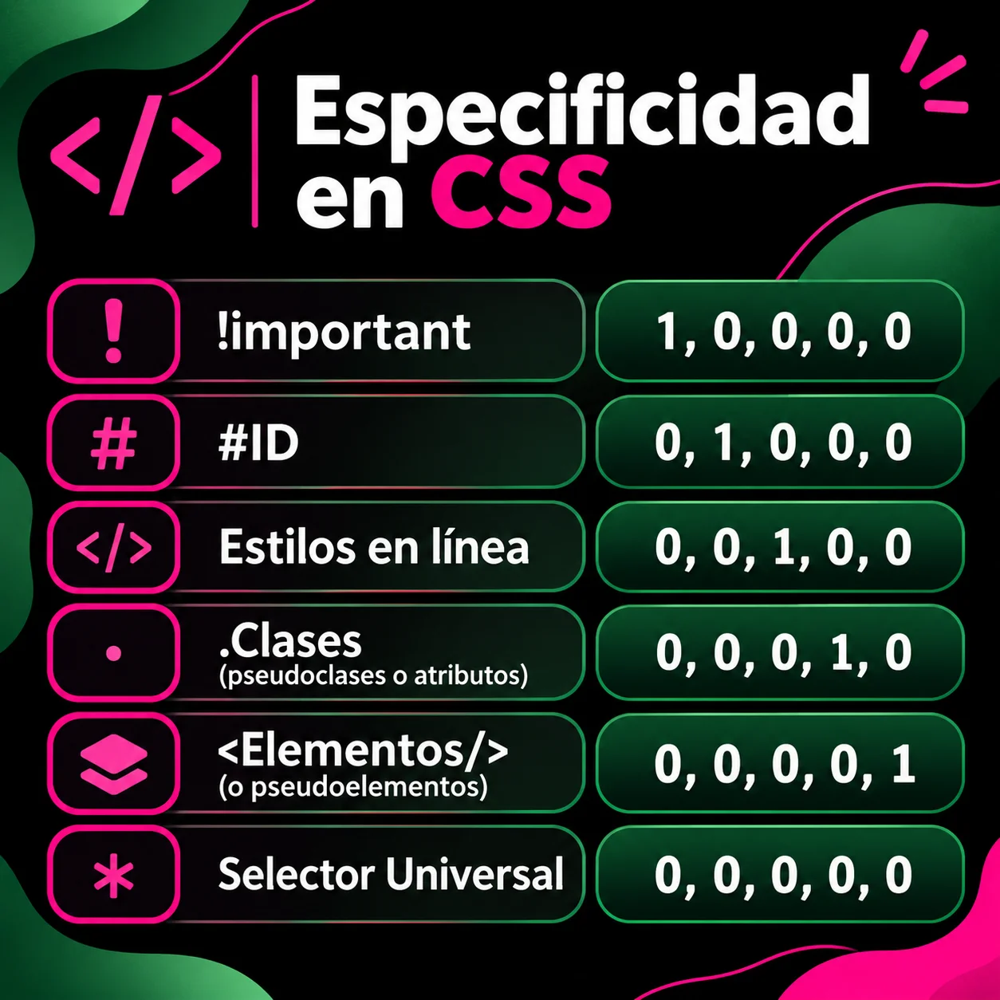

!important
Es una declaración que fuerza la prioridad de una regla frente a declaraciones normales. No es un selector ni forma parte de la puntuación de especificidad.
Aprende cómo decide CSS qué estilo aplicar cuando varias reglas intentan modificar el mismo elemento de una página web.
La especificidad es el conjunto de reglas que utiliza CSS para determinar cuál selector tiene mayor prioridad. Cuando dos o más reglas afectan al mismo elemento, normalmente se aplica la que tenga mayor especificidad. Si tienen la misma especificidad, se tiene en cuenta el orden en que fueron escritas.
Estos son los principales tipos de selectores que participan en el cálculo de especificidad:
Es una declaración que fuerza la prioridad de una regla frente a declaraciones normales. No es un selector ni forma parte de la puntuación de especificidad.
Seleccionan un elemento mediante un identificador único.
Por ejemplo: #principal.
Se escriben directamente en el atributo style
de una etiqueta HTML y suelen tener prioridad sobre las reglas
normales de las hojas de estilo.
Permiten seleccionar elementos por su clase, atributos o estado.
Ejemplos: .boton, [type="text"] y
:hover.
Seleccionan etiquetas HTML o partes específicas de ellas.
Ejemplos: p, h1, ::before
y ::first-line.
Selecciona todos los elementos, pero no aporta puntos a la
especificidad. Ejemplo: * { box-sizing: border-box; }.
Observa estas reglas. Todas intentan cambiar el color del mismo título:
p { color: white; }
.texto { color: green; }
#titulo { color: deeppink; }
Aunque existen reglas para la etiqueta y para la clase, el selector
#titulo tiene mayor especificidad y por eso el texto
aparece de color rosado.
La siguiente imagen resume visualmente los niveles de especificidad y complementa las explicaciones de esta página.
